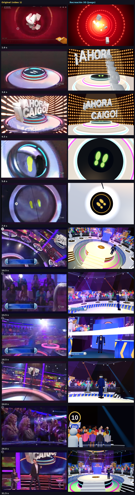
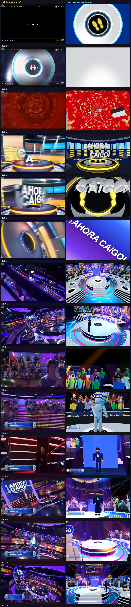
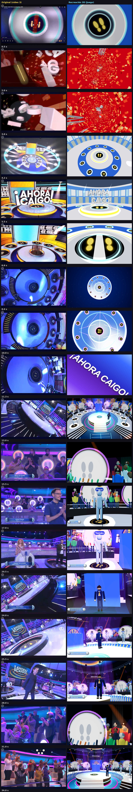

Vista previa: abre el juego con la cabecera elegida y empieza una partida; la cabecera suena con su audio original antes del programa (toca la pantalla para saltarla).
▶ Cabecera 1▶ Cabecera 2 (2014)▶ Cabecera 3 (2021)


